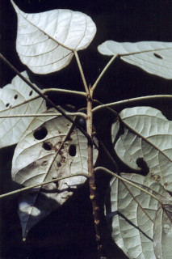
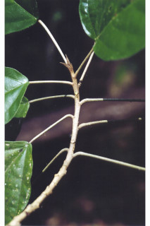
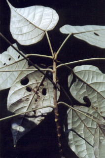
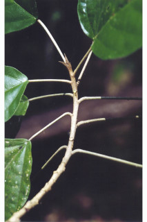
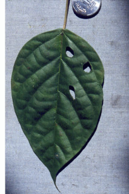
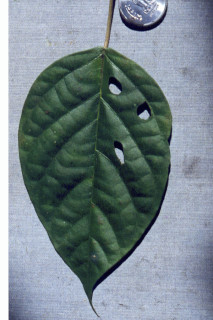

Trees up to 18 m tall.
18 ಮೀ. ಎತ್ತರದವರೆಗೆ ಬೆಳೆಯುವ ಮರಗಳು.
18 മീറ്റര് വരെ ഉയരമുളള മരങ്ങള്.
மரங்கள் 18 மீ. உயரம் வரை வளரக்கூடியது.
Branchlets terete, stellate_scaly.
ಕಿರುಕೊಂಬೆಗಳು ದುಂಡಾಗಿದ್ದು ನಕ್ಷತ್ರ-ಮೃದುತುಪ್ಪಳದಿಂದ ಕೂಡಿರುತ್ತವೆ.
നക്ഷത്രാകാര ശല്ക്കങ്ങളുളള, ഉരുണ്ട ഉപശാഖകള്.
சிறிய நுனிக்கிளைகள் குறுக்குவெட்டுத் தோற்றத்தில் வளையமானது, நட்சத்திர வடிவ செதில்களுடையது.
Leaves simple, alternate, spiral; stipules linear, caducous; petiole 3-11 cm long, terete, stellate_scaly; lamina 7.5-15.5 x 3.8-10.5 cm, broadly-elliptic to ovate, apex acuminate, base retuse, margin entire, chartaceous, densely silvery stellate_scaly beneath, glabrous above; 1 to 2 pairs nerves arising from the base; midrib almost flat above; secondary_nerves 5-8 pairs; tertiary_nerves distantly percurrent.
ಎಲೆಗಳು ಸರಳವಾಗಿದ್ದು,ಪರ್ಯಾಯ ಮತ್ತು ಸುತ್ತು ಜೋಡನಾ ವ್ಯವಸ್ಥೆಯಲ್ಲಿರುತ್ತವೆ; ಕಾವಿನೆಗಳು ರೇಖಾತ್ಮಕ ರೂಪಿಗಳಾಗಿರುತ್ತವೆ ಹಾಗೂ ಉದುರಿ ಹೋಗುತ್ತವೆ;ತೊಟ್ಟುಗಳು 3 -11 ಸೆಂ.ಮೀ. ಉದ್ದವಿದ್ದು ದುಂಡಾಗಿರುತ್ತವೆ ಮತ್ತು ನಕ್ಷತ್ರರೂಪಿ ಶಲ್ಕೆಗಳಿಂದ ಕೂಡಿರುತ್ತವೆ; ಪತ್ರಗಳು 7.5 – 15.5 X 3.8 – 10.5 ಸೆಂ. ಮೀ. ಗಾತ್ರ, ವಿಶಾಲವಾದ ಅಂಡವೃತ್ತಾಕಾರದಿಂದ ಅಂಡಾಕಾರದವರೆಗಿನ ಆಕಾರ ಹೊಂದಿರುತ್ತವೆ;ತುದಿ ಕ್ರಮೇಣ ಚೂಪಾಗುವ ಮಾದರಿಯಲ್ಲಿದ್ದು ಬುಡ ಕಚ್ಚುಳ್ಳ ದುಂಡನೆಯ ಮಾದರಿಯಲ್ಲಿರುತ್ತದೆ, ಅಂಚು ನಯವಾಗಿದ್ದು ಮೇಲ್ಮೈ ಕಾಗದವನ್ನೋಲುವ ಮಾದರಿಯಲ್ಲಿರುತ್ತದೆ;ಪತ್ರದ ಕೆಳ ಬದಿ ಬೆಳ್ಳಿಯ ಹೊಳಪುಳ್ಳ ನಕ್ಷತ್ರ – ಶಲ್ಕೆಗಳಿಂದ ಕೂಡಿರುತ್ತವೆ ಹಾಗೂ ಮೇಲ್ಭಾಗ ರೋಮರಹಿತವಾಗಿರುತ್ತದೆ; ಪತ್ರದ ಬುಡದಿಂದ 1ರಿಂದ 2 ಜೋಡಿ ನಾಳಗಳು ಉದ್ಭವಿಸುತ್ತವೆ;ಮಧ್ಯನಾಳ ಪತ್ರದ ಮೇಲ್ಭಾಗದಲ್ಲಿ ಹೆಚ್ಚೂ ಕಡಿಮೆ ಚಪ್ಪಟೆಯಾಗಿರುತ್ತದೆ;ಎರಡನೇ ದರ್ಜೆಯ ನಾಳಗಳು 5-8 ಜೋಡಿಗಳಿರುತ್ತವೆ;ಮೂರನೇ ದರ್ಜೆಯ ನಾಳಗಳು ಹೆಚ್ಚು ಅಂತರ ಹೊಂದಿದ್ದು ಎಲೆದಿಂಡಿಗೆ ಅಡ್ಡವಾಗಿ ಕೂಡುವಂತವು.
ലഘുവായ ഇലകള്, ഏകാന്തര ക്രമത്തില്, സര്പ്പിളമായി അടുക്കിയിരിക്കുന്നു; രേഖീയ അനുപത്രങ്ങള് എളുപ്പം കൊഴിഞ്ഞ് വീഴുന്നവയാണ്; നക്ഷത്രാകാര ശല്ക്കങ്ങളുളള, ഉരുണ്ട ഇലഞെട്ടിന് 3 സെ.മീ മുതല് 11 സെ.മീ വരെ നീളം; പത്രഫലകത്തിന് 7.5 സെ.മീ മുതല് 15.5 സെ.മീ വരെ നീളവും 3.8 സെ.മീ മുതല് 10.5 സെ.മീ വരെ വീതിയും, വീതിയേറിയ-ദീര്ഘവൃത്താകാരം തൊട്ട് അണ്ഡാകാരം വരെയാണ്, പത്രാഗ്രം ദീര്ഘമാണ്, പത്രാധാരം ഇടക്കൊരു ചെറുവിടവുള്ള വൃത്താകാരമാണ്, അവിഭജിതമായ അരികുകള്; കടലാസ്പോലത്തെ പ്രകൃതം, കീഴെ കനത്തില് നക്ഷത്രാകാര ശല്ക്കങ്ങള് നിറഞ്ഞതും, മുകളില് അരോമിലവുമാണ്; പത്രാധാരത്തില് നിന്നും ഒന്നോ രണ്ടോ ഞരമ്പുകള് പുറപ്പെടുന്നു; 1 മുഖ്യസിര മുകളില് ഏതാണ്ട് പരന്നാണിരിക്കുന്നത്; 5 മുതല് 8 വരെ ജോഡി ദ്വിതീയ ഞരമ്പുകള്; വിദൂര-പെര്കറന്റ് വിധത്തിലുളള ത്രിതീയ ഞരമ്പുകള്.
இலைகள் தனித்தவை, மாற்றுஅடுக்கமானவை, சுழல் போல் அமைந்தது; இலையடிச்செதில் கோட்டு வடிவானது, எளிதில் உதிரக்கூடியவை; இலைக்காம்பு 3-11 செ.மீ. நீளமானது, நட்சத்திர வடிவ செதில்களுடையது; இலை அலகு 7.5-15.5 X 3.8-10.5 செ.மீ., அகன்ற நீள்வட்டம் முதல் முட்டை வடிவானது, அலகின் நுனி அதிக்கூரியது, அலகின் தளம் சிறு பிளவுடையது, அலகின் விளிம்பு முழுமையானது, சார்ட்டேசியஸ், அலகின் பின்புறத்தில் அடர்த்தியாக நட்சத்திர வடிவ வெள்ளி நிறமான செதில்கள் கொண்டது, மேற்பரப்பில் உரோமங்களற்றது; அலகின் தளத்திலே 1-2 ஜோடி நரம்புகள் கொண்டது; மையநரம்பு அலகின் பரப்பிற்கு சமமானது; இரண்டாம் நிலை நரம்புகள் 5-8 ஜோடிகள்; மூன்றாம் நிலை நரம்புகள் அகன்ற பெர்க்கரண்ட்.
Inflorescence racemes; flowers unisexual, monoecious, white.
ಪುಷ್ಪಮಂಜರಿ ಮಧ್ಯಾಭಿಸರ ಮಾದರಿಯವು;ಹೂಗಳು ಬಿಳಿ ಬಣ್ಣದಲ್ಲಿರುತ್ತವೆ .ಹೂಗಳು ಏಕಲಿಂಗಿಗಳಾಗಿದ್ದು ಗಂಡು ಮತ್ತು ಹೆಣ್ಣು ಹೂಗಳು ಒಂದೇ ಸಸ್ಯದಲ್ಲಿರುತ್ತವೆ
പൂങ്കുലകള് റസീമുകളാണ്; വെളുത്ത നിറത്തിലുളള പൂക്കള് ഏകലിംഗികളാണ് മൊണീഷ്യസും.
ரெசீம் மஞ்சரி; மலர்கள் ஓர்பாலானவை; ஓரகம் கொண்டவை, வெள்ளை நிறமானது.
Capsule obovoid, 2.5 cm long, brown tomentose, seeds 3.
ಸಂಪುಟ ಫಲಗಳು ಬುಗುರಿ ಆಕಾರದಲ್ಲಿದ್ದು 2.5 ಸೆಂ.ಮೀ. ಉದ್ದ ಹೊಂದಿರುತ್ತವೆ ಹಾಗೂ ಕಂದು ಬಣ್ಣದ ದಟ್ಟ ಮೃದುತುಪ್ಪಳದಿಂದ ಕೂಡಿರುತ್ತವೆ ಮತ್ತು 3ಬೀಜಗಳನ್ನೊಳಗೊಂಡಿರುತ್ತವೆ.
3 വിത്തുവീതമുളള കായ, തവിട്ടുരോമങ്ങള് കനത്തില് നിറഞ്ഞ, 2.5 സെ.മീ നീളമുളള അപഅണ്ഡാകാര കാപ്സ്യൂള് ആണ്.
வெடிகனி (கேப்சூல்) தலைகீழ் முட்டை வடிவானது, 2.5 செ.மீ. நீளமானது, ப்ரவுன் நிறமான உரோமங்களுடையது, விதைகள் 3.
 



 
